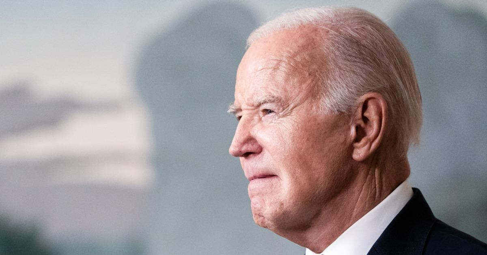

NoneThe Biden administration is seeking to impose a new limit on the typical credit card late fee, but the consumer credit and banking industry warns the change could ultimately affect other consumers in the form of higher interest rates. The Consumer Financial Protection Bureau said in a release Tuesday that a proposed $8 cap for a typical late fee would help save consumers a cumulative $10 billion. “For over a decade, credit card giants have been exploiting a loophole to harvest billions of dollars in junk fees from American consumers,” CFPB Director Rohit Chopra said. “Today’s rule ends the era of big credit card companies hiding behind the excuse of inflation when they hike fees on borrowers and boost their own bottom lines. President Joe Biden has made targeting "junk" fees a major focus of his administration. Earlier Tuesday, he announced the formation of a task force targeting unfair and illegal pricing schemes. But the credit card industry and other financial associations are already hitting out at the CFPB's proposed new rule, saying it could lead to unintended consequences for consumers. In a statement, Rob Nichols, the president and CEO of the American Bankers Association, called the proposal "flawed," arguing it could actually result in more late payments and ultimately lower credit scores. It could also have a knock-on effect for card users who do pay what they owe on time, Nichols said. "The Bureau’s misguided decision to cap credit card late fees at a level far below banks’ actual costs will force card issuers to reduce credit lines, tighten standards for new accounts and raise APRs for all consumers — even those who pay on time," Nichols said. The Consumer Bankers Association, another trade group, echoed those concerns. “The rule’s policy goals are, at best, consumer redistribution, not consumer protection,” the organization's president and chief executive, Lindsey Johnson, said in a statement. Later Tuesday afternoon, the U.S. Chamber of Commerce announced it was suing over the proposal. “Once again, the Consumer Financial Protection Bureau has exceeded its authority," the business group said in a statement. "The agency’s final credit card late fee rule punishes Americans who pay their credit card bills on time by forcing them to pay for those who don’t. This will result in fewer card offerings and limit access to affordable credit for many consumers." The proposed rule would apply only to large credit card companies. Currently, credit card companies can charge as much as $30 for a first late payment under a law enacted in the wake of the 2008-09 financial crisis. The CFPB said it had reviewed market data to arrive at the $8 late fee it is proposing. As part of the new rule, the CFPB would nevertheless allow banks to charge higher late fees under a "show your work" provision. Nichols of the bankers' association said that the $8 level is "far below" banks’ actual cost of managing late fees and that the association is likely to challenge it. "We will closely review this final rule and consider all options to fight the harmful consumer policy coming out of Director Chopra’s CFPB," Nichols said, adding: "This rule should not be allowed to go into effect.” |
 |